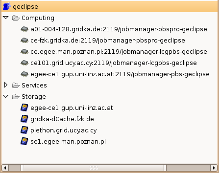

The Glue Information View presents the information obtained from
the information systems of defined VO's. At this time the data
contained in the information view is obtained from the defined BDII services
The VO content presented in the Project View is a summary of the information presented
in the Glue Information Viewer.

Only data for open Projects is fetched. the data sources are obtained from VO definitions. (Projects are based on defined VO's and for each VO there is a defined Information System URL.) Data is refreshed on three occasions: